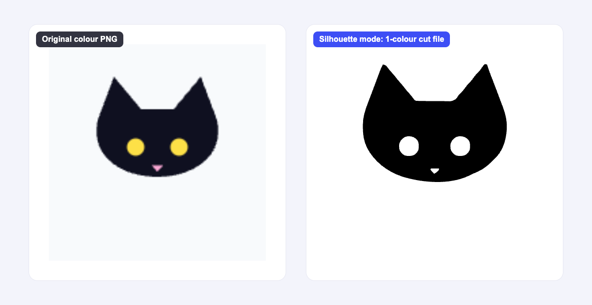

How to Make SVG Files for Cricut from Any Image
To make a Cricut SVG from any image, trace it into vector layers with one layer per material colour, remove the background and tiny fragments, then upload the SVG in Design Space via Upload → Browse. Use one colour (Silhouette mode) for decals and stencils, 2–5 colours for layered vinyl or HTV, and check the size, weld overlaps and mirror iron-on designs before cutting.
Cricut machines cut along vector paths. Design Space can trace simple images itself, but it flattens everything into one layer and struggles with detailed artwork. Making a proper SVG first gives you clean edges, a separate layer for every colour and far more control. This guide walks through the whole process, from choosing an image to cutting it.
Why make an SVG instead of uploading a PNG to Cricut?
An SVG gives Cricut Design Space separate, smooth cut paths for every colour, while a PNG upload becomes a single flattened layer that you can only cut in one colour or print. When you upload a PNG, Design Space asks you to remove the background and then treats the result as one shape. You cannot cut the hair, face and shirt of a character from three different vinyls. An SVG keeps each colour as its own layer, so each can be assigned to its own material.
Step 1: Choose an image that will cut well
The best images for Cricut have bold shapes, few colours, clear outlines and no tiny details.
| Cuts well | Cuts badly |
|---|---|
| Bold clip art, cartoons, logos | Photos with soft shading |
| Silhouettes and lettering | Very thin lines and hairline text |
| 2–5 flat colours | Gradients and textures |
| High-resolution PNG | Tiny, blurry thumbnails |
Only use images you created or have permission to use, especially if you plan to sell what you make.
Step 2: Decide single-layer or multi-layer
Use a single layer for decals, stencils and one-colour projects, and multiple layers for colourful vinyl, iron-on and paper designs. Single-layer designs are faster to cut and weed and more durable; layered designs look richer but need alignment. Read Single-Layer vs Multi-Layer SVGs for the trade-offs.
Step 3: Trace the image into an SVG
- Open the PNG to SVG for Cricut converter and drop in your image.
- For a one-colour cut, choose Silhouette. For layered designs, use Logo / Clip art and set the number of colours to the number of materials you will use.
- Raise speckle removal until there are no tiny islands — every speck becomes a piece you would have to weed.
- Click × on the background colour to delete it.
- Optionally enable Registration marks under Advanced settings to help align layers.
- Download the SVG.

Step 4: Upload the SVG to Cricut Design Space
- In Design Space, click Upload → Upload Image → Browse and select your SVG.
- Name it, add tags if you like, and click Upload. Select it and click Add to Canvas.
- In the Layers panel, check that each colour is a separate layer.
Step 5: Prepare the design for cutting
- Resize to the exact size of your project — SVGs can import at an unexpected size.
- Weld overlapping shapes of the same colour so they cut as one piece instead of being sliced.
- Attach layers or pieces that must keep their positions on the mat.
- Mirror iron-on (heat transfer vinyl) designs; never mirror adhesive vinyl.
- Add a weeding box — a rectangle around the design — for easier weeding.
- Check line thickness. Strokes thinner than about 1.5 mm tear easily in vinyl.
More design advice: 10 Design Tips for Clean Vinyl Decals.
Step 6: Cut, weed and apply
Choose the right material setting, test-cut a small shape, then cut, weed and apply each layer from the bottom up. For layered vinyl, start with the base colour and use transfer tape to place each following layer, lining up registration marks if you used them.
Print Then Cut: when to use it instead
Use Print Then Cut when your design has many colours, gradients or photo detail that cannot be cut as separate layers. You print the full-colour image on sticker paper or printable vinyl and the Cricut cuts around it. Our guide How to Make Print-Then-Cut Stickers covers the process.
Which materials work with Cricut SVG cut files?
The same SVG can cut adhesive vinyl, heat transfer vinyl, cardstock, paper, faux leather, felt and craft foam — only the material setting and blade change.
| Material | Typical projects | Design tip |
|---|---|---|
| Permanent adhesive vinyl | Mugs, tumblers, car decals, signs | Keep lines at least 1.5 mm thick |
| Removable vinyl | Wall decals, stencils | Single-layer designs apply most easily |
| Heat transfer vinyl | T-shirts, bags, hats | Mirror before cutting; limit layers |
| Cardstock and paper | Cards, layered art, cake toppers | Delicate detail is possible; use a fresh blade |
| Faux leather and felt | Earrings, bows, appliqué | Simple, bold shapes cut best |
How do I make a stencil from an image?
Trace the image in Silhouette mode, then add small bridges to any "island" shapes so they stay connected to the stencil. Letters such as O, A, B, D, P, Q and R have inner pieces that would fall out of a stencil. In Design Space or a vector editor, draw thin rectangles across those gaps and use Slice or Weld to join them. Cut from stencil vinyl or removable vinyl, and test the design on scrap before using it on a finished piece.
What size should Cricut designs be?
Size the design to the surface it goes on, and keep the smallest details large enough to cut and weed — roughly 1.5 mm for lines and 6 mm for letter height in vinyl. Typical starting sizes:
| Project | Typical design width |
|---|---|
| Adult T-shirt front | 9–11 in (23–28 cm) |
| Left-chest logo | 3–4 in (7.5–10 cm) |
| 11 oz mug wrap area | About 3 in (7.5 cm) tall |
| Car window decal | 4–12 in (10–30 cm) |
| Greeting card front | 4–5 in (10–13 cm) |
Always measure your actual item: garment sizes, mug shapes and windows vary. When in doubt, cut a quick paper test at full size and hold it against the item before using vinyl.
Troubleshooting
| Problem | Fix |
|---|---|
| Hundreds of tiny pieces | Fewer colours, more speckle removal |
| Design cut into slices | Weld overlapping shapes |
| Wrong size after upload | Resize in Design Space before cutting |
| Background cut as a box | Remove the background colour before downloading |
| Thin parts tear when weeding | Thicken lines or simplify the design |
Frequently asked questions
Can I make Cricut SVGs for free?
Yes. Our converter is free and runs in your browser, and SVG upload works in Cricut Design Space without a Cricut Access subscription.
What is the best image format to start from?
A high-resolution PNG with a transparent background. JPGs work too, but need more speckle removal.
Does the same SVG work with Silhouette?
Yes, in Silhouette Studio Designer Edition or higher. The free Basic Edition cannot import SVG.
How many colours should a Cricut SVG have?
One for decals and stencils, two to five for most layered projects. Each colour means another material and another cut.
Summary
Pick a bold, simple image, trace it with one layer per material, remove the background and specks, upload it to Design Space, then resize, weld, attach and mirror as needed. A well-made SVG turns any image into a clean, easy-to-weed Cricut project.
We build free, privacy-first tools for converting images to vectors and write practical guides for designers, crafters and developers. Published November 21, 2026.
Ready to try it? Convert your image to SVG for free.
Open the converter